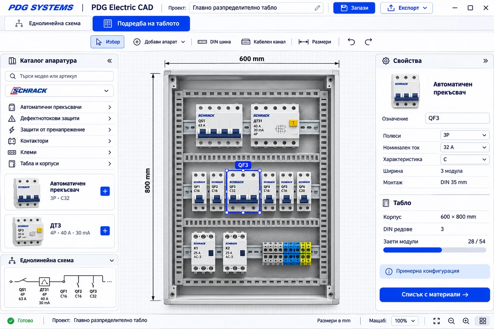

PDG Electric CAD
Онлайн планиране на електрическо табло
Изберете броя редове и модулите на ред. Подредете апаратите в монтажния изглед, прегледайте опростената еднолинейна схема и изтеглете списъка с апаратурата.
Редакторът изисква вход в профил. Ако нямате профил, създайте го от страницата за вход.

Примерно табло с три реда по 18 модула
Готовият пример в редактора показва табло с три реда по 18 модула. В монтажния изглед изберете апарат, разгледайте параметрите му и го преместете на свободна позиция. Списъкът в „Спецификация“ отразява поставените апарати.
За да заредите началната конфигурация, използвайте „Зареди пример“. Запазете променения вариант чрез „Запази проект JSON“.
Отворете примерния проект →Как да създадете собствен чертеж
- Задайте размера на таблото. Въведете наименование, брой редове и модули на ред, след което натиснете „Създай / промени таблото“.
- Поставете апаратите. В монтажния изглед изберете апарат от палитрата и щракнете върху свободна позиция. Щракнете върху поставения апарат, за да редактирате параметрите му, или го преместете с влачене.
- Проверете подредбата. В монтажния изглед виждате физическото разположение на апаратите. „Еднолинейна схема“ показва опростен изглед за предварително планиране.
- Запазете или експортирайте. „Запази проект JSON“ съхранява редактируемия проект. „Експорт CSV“ изтегля спецификацията, „SVG чертеж“ изнася текущия изглед, а „Печат / PDF“ отваря прозореца за печат на браузъра.
Файлове и схема
Как се отваря запазен проект?
Изберете „Отвори проект“ и посочете запазения JSON файл.
За какво мога да използвам еднолинейния изглед?
Изгледът е за предварително обсъждане с проектант. Изборът на защити, проверката на токовете на късо съединение и селективността се правят в електрическия проект.
От проект към оборудване
Разгледайте техническите параметри и цените на компонентите. Преди поръчка уточнете съвместимостта, наличността и доставката.
Нуждаете се от съдействие?
Изпратете размерите, вида на обекта и изискванията си. Ще уточним подходящото оборудване и следващите стъпки.
Чертежът е помощен инструмент. Окончателният избор и изпълнението се проверяват от квалифициран специалист според конкретния обект.